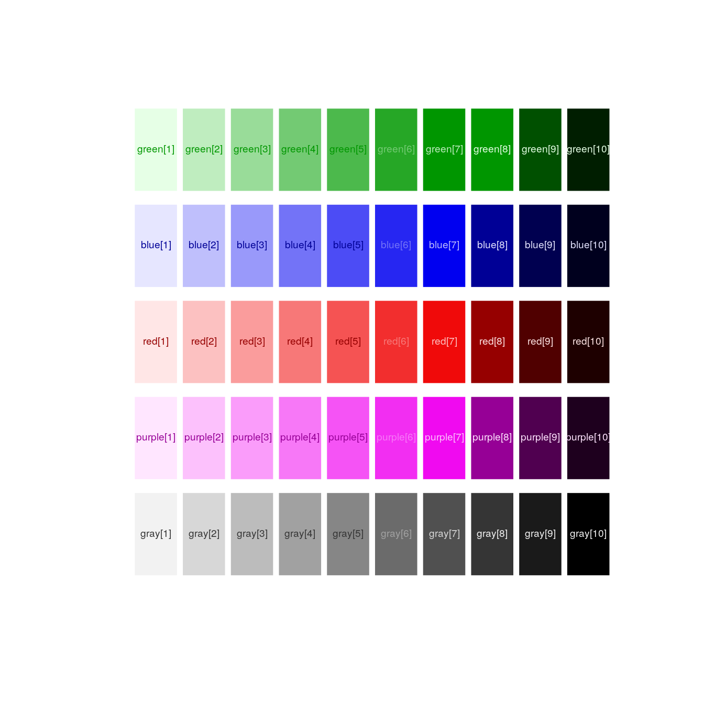
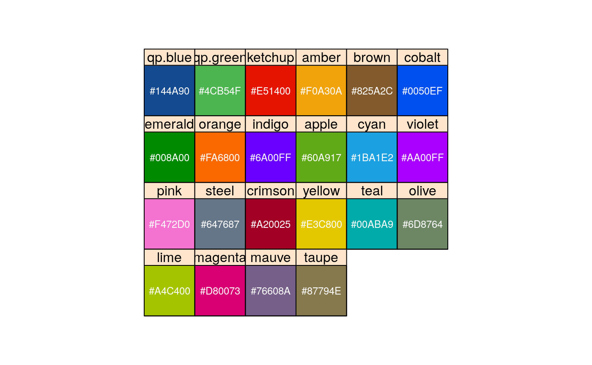
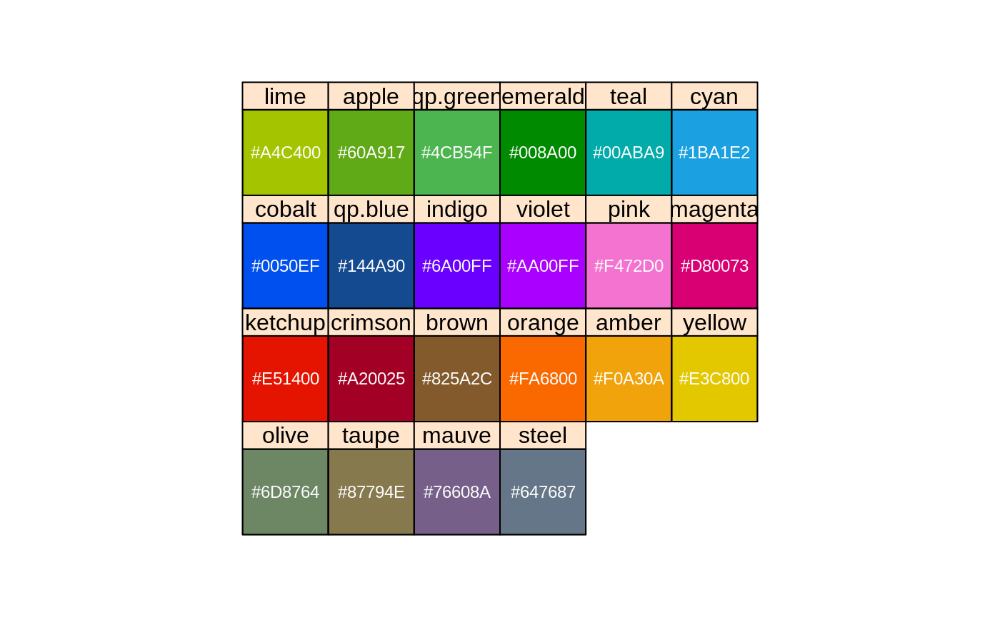

qPColorPalette.Rmd##
## Attaching package: 'Hmisc'## The following objects are masked from 'package:base':
##
## format.pval, units##
## Attaching package: 'xtable'## The following objects are masked from 'package:Hmisc':
##
## label, label<-##
## Attaching package: 'plyr'## The following objects are masked from 'package:Hmisc':
##
## is.discrete, summarize##
## Attaching package: 'dplyr'## The following objects are masked from 'package:plyr':
##
## arrange, count, desc, failwith, id, mutate, rename, summarise,
## summarize## The following objects are masked from 'package:Hmisc':
##
## src, summarize## The following objects are masked from 'package:stats':
##
## filter, lag## The following objects are masked from 'package:base':
##
## intersect, setdiff, setequal, union## ## package path = /usr/local/lib/R/site-library/qpToolkit## Installation Qualification disabled. Unvalidated System.## setting stringsAsFactors to FALSE as qPharmetra default.## the greens and the blues
par(mfrow = c(1,1), pty = 's')
nc = length(blue)
cols = c(8,8,8,8,8,4,2,1,1,1)
plot(1:nc, seq(-0.45,0.3,length=nc), type = 'n', axes = F, xlab ="", ylab = "",
xlim = c(0.5, nc + 0.5))
for(i in 1:nc)
{
polygon(c(i-0.45, i+0.45, i+0.45, i-0.45), c(0.16, 0.16, 0.29, 0.29),
col = green[i], angle = -1, density = -1, border=0)
text(i,0.225,paste("green[",i,"]", sep = ""), cex = 0.6, col = green[cols][i])
polygon(c(i-0.45, i+0.45, i+0.45, i-0.45), c(0.01, 0.01, 0.14, 0.14),
col = blue[i], angle = -1, density = -1, border=0)
text(i,0.075,paste("blue[",i,"]", sep = ""), cex = 0.6, col = blue[cols][i])
polygon(c(i-0.45, i+0.45, i+0.45, i-0.45), c(-0.01, -0.01, -0.14, -0.14),
col = red[i], angle = -1, density = -1, border=0)
text(i,-0.075,paste("red[",i,"]", sep = ""), cex = 0.6, col = red[cols][i])
polygon(c(i-0.45, i+0.45, i+0.45, i-0.45), c(-0.16, -0.16, -0.29, -0.29),
col = purple[i], angle = -1, density = -1, border=0)
text(i,-0.225,paste("purple[",i,"]", sep = ""), cex = 0.6, col = purple[cols][i])
polygon(c(i-0.45, i+0.45, i+0.45, i-0.45), c(-0.31, -0.31, -0.44, -0.44),
col = gray[i], angle = -1, density = -1, border=0)
text(i,-0.375,paste("gray[",i,"]", sep = ""), cex = 0.6, col = gray[cols][i])
}
library(lattice)
lapply(list(qp.colors,qp.colors.sorted), function(my.colors)
xyplot(yval ~ xval | color
, data = expand.grid(xval = 1, yval = 1, color = names(my.colors))
, xlim = c(0,1)
, ylim = c(0,1)
, as.table = T
, panel = function(x,y,...)
{
panel.rect(xleft = 0, ybottom = 0
, xright = 1, ytop = 1
, col = my.colors[panel.number()]
)
ltext(x = 0.5, y = 0.5
, my.colors[panel.number()], col = rgb(0.99,0.99,0.99)
, cex = 0.75
)
}
, aspect = 1
, par.strip.text = list(cex = 1)
, scales = list(y = list(at = NULL), x = list(at = NULL))
, ylab = ""
, xlab = ""
)
)## [[1]]
##
## [[2]]
par(pty = "m")
plot(0:1,0:1, type = 'n',axes = F, xlab = "", ylab = "")
polygon(x = c(0,1,1,0),y=c(0.5,0.5,0,0), col = qp.blue, border = F)
polygon(x = c(0,1,1,0),y=c(1,1,0.5,0.5), col = qp.green, border = F)
text(0.5,0.75, "qPharmetra", col = "white", cex = 5)
text(0.5,0.25, "qPharmetra", col = "white", cex = 5)